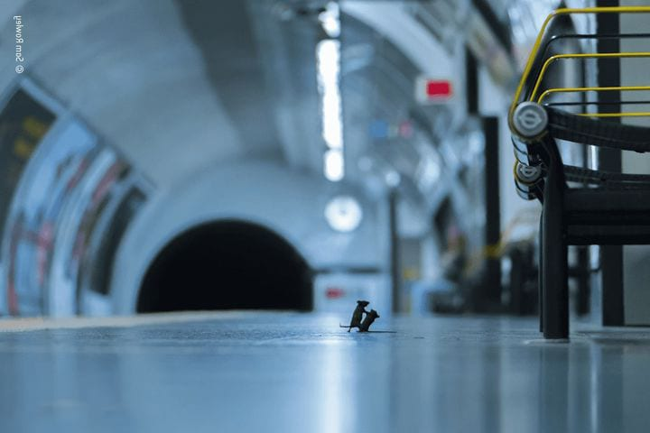
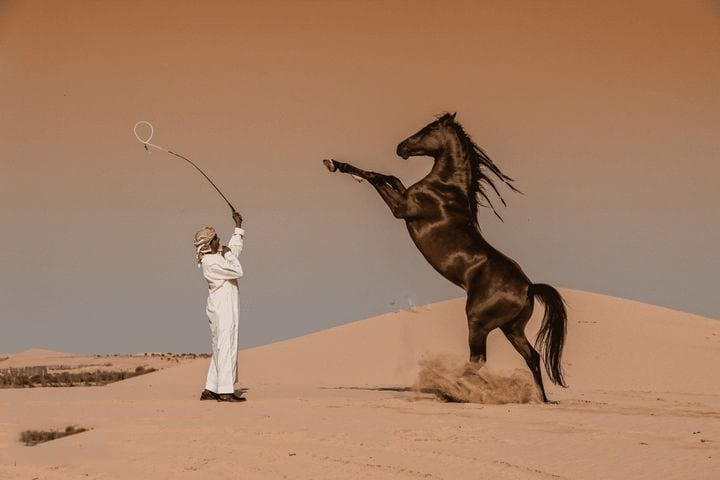
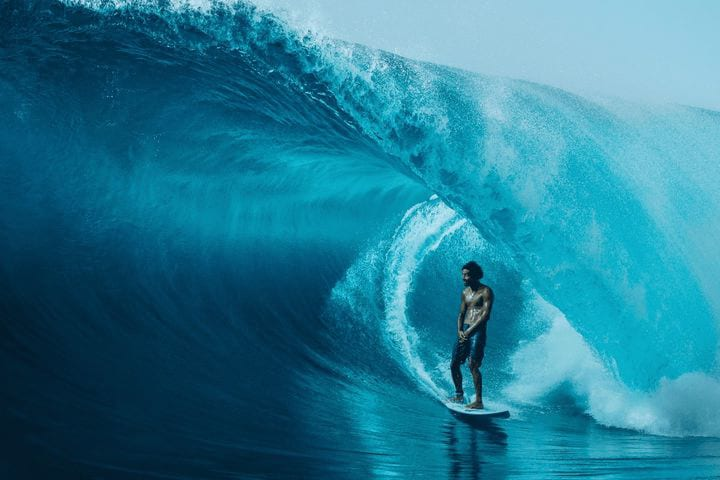
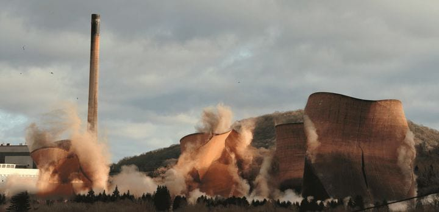

Một trong những bức ảnh đẹp nhất của năm là tác phẩm đã giành được “Giải thưởng Sự lựa chọn của Nhân dân” trong cuộc thi nhiếp ảnh gia về động vật hoang dã hàng năm của Bảo tàng Lịch sử Tự nhiên Anh. Nhà làm phim Bristol Sam Rowley kinh ngạc trước cuộc chiến bí mật, kịch tính giữa hai chú chuột trên sân ga tàu điện ngầm. Anh đã mất một tuần để chụp được bức ảnh độc đáo này.

Abbas Alkhamis, Ả Rập Xê Út, đã giành được Giải thưởng Quốc gia Giải thưởng Nhiếp ảnh Thế giới Sony 2020.

Giải thưởng nhiếp ảnh lướt sóng của Nikon, “Mối quan hệ bất thường”.

Bốn tháp làm mát của Nhà máy điện Cầu Sắt ở Shropshire, Vương quốc Anh, mặc dù có chiều cao 125 mét, đã bị phá hủy chỉ trong 10 giây vào ngày 6 tháng 12 năm 2019. Alec Connah / Vương quốc Anh / Cuộc thi mở / Giải thưởng Hành động / Người chiến thắng Giải thưởng Nhiếp ảnh Thế giới Sony 2020.